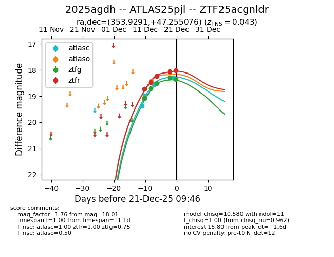
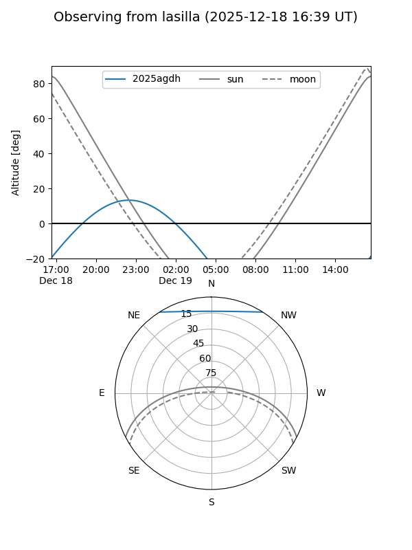
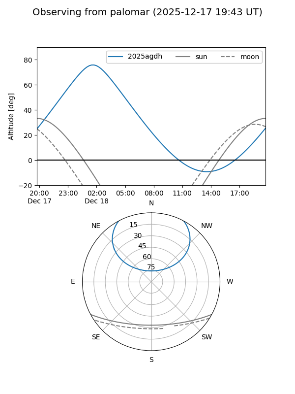
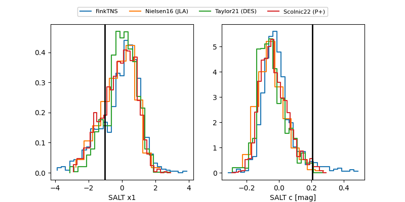

2025agdh
Target 2025agdh at 2025-12-20 20:47
Aliases and brokers:
FINK: fink-portal.org/ZTF25acgnldr
Lasair: lasair-ztf.lsst.ac.uk/objects/ZTF25acgnldr
ALeRCE: alerce.online/object/ZTF25acgnldr
TNS: wis-tns.org/object/2025agdh
YSE: ziggy.ucolick.org/yse/transient_detail/2025agdh
alt names
ZTF25acgnldr (ztf,fink_ztf)
2025agdh (tns,yse)
ATLAS25pjl (atlas)
Coordinates:
equatorial (ra, dec) = 353.9291,+47.25508
equatorial (HMS+DMS) = 23:35:42.99,+47:15:18.27
galactic (l, b) = (109.8335,-13.68173)
Flags:
confirmed ia
Photometry:
last atlasc=18.51, atlaso=18.43, ztfg=18.29, ztfr=18.05
3 atlasc, 1 atlaso, 4 ztfg, 4 ztfr detections
Lightcurve

Visibility


Additional plots
